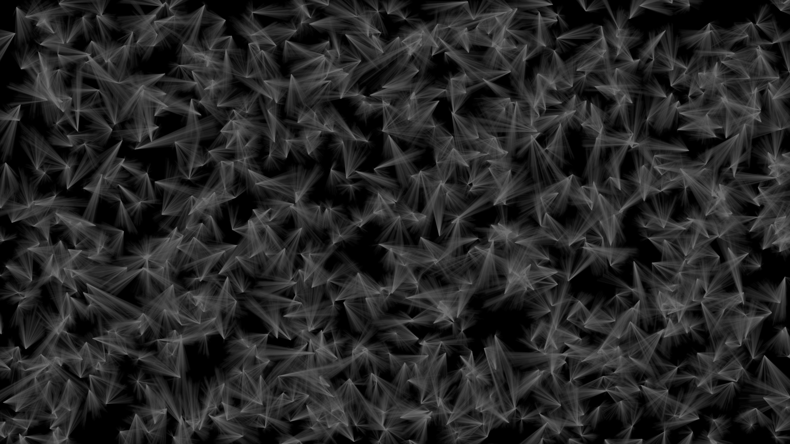
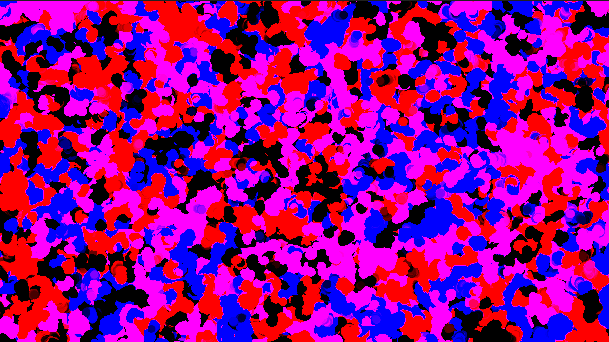

"Lines of Convergence" is a reflection of the intricacies of human experience and the uncharted pathways we navigate.
In this piece, I sought to capture the essence of life's complex yet beautiful intersections through a dynamic array of diagonal,
multicolored lines against a profound black canvas. Each line represents a unique journey, a distinct narrative that, when viewed collectively,
forms a tapestry of interwoven destinies. The vivid spectrum of hues—from deep purples and greens to delicate blues and reds—symbolizes the diversity
and harmony found in our shared existence. My intent was to evoke contemplation on the chaotic yet ordered nature of the universe,
inviting viewers to discover the inherent beauty within the abstract intersections of their own lives.

"Veil of Shadows" is an exploration into the mysterious and ephemeral nature of existence.
This piece is composed of intricate, overlapping patterns of translucent, smoky triangles set against a stark black background.
Each form emerges from the void, converging and dissipating like fleeting moments and memories.
The subtle gradients within the shapes suggest a sense of depth and movement, inviting the viewer to delve into the layered complexity of their own subconscious.
The monochromatic palette underscores the enigmatic quality of the artwork, evoking a contemplative mood.
Through "Veil of Shadows," I aim to capture the elusive and ever-shifting nature of reality, urging viewers to embrace the unknown and find beauty in the transient.
"Chromatic Symphony" is an exuberant celebration of color and form, a vivid manifestation of energy and movement.
This piece is a riotous blend of vibrant reds, blues, purples, and pinks, all intermingling in a cacophony of abstract shapes against a contrasting black background.
Each blotch and swirl pulses with life, evoking the spontaneity and joy found in unfiltered creative expression.
The chaotic yet harmonious interplay of hues invites the viewer to lose themselves in the myriad possibilities within the canvas. Through "Chromatic Symphony,"
I aim to encapsulate the essence of passion and exuberance, encouraging viewers to embrace the kaleidoscope of emotions and experiences that make up the human spirit.

"Neon Reverie" is a vibrant exploration of luminosity and depth, capturing the ethereal beauty of light in motion.
This piece is an amalgamation of blurred, glowing orbs in shades of neon green, electric blue, and vivid purple, set against a velvety black background.
Each glowing spot seems to pulse with an otherworldly energy, evoking a sense of drifting through a dreamscape or peering into a microscopic world teeming with life.
The soft focus and overlapping colors create a sense of fluidity and continuous transformation. With "Neon Reverie,"
I aim to immerse the viewer in a meditative experience, encouraging them to revel in the abstract beauty of light and color, and to find tranquility within the vibrant chaos.